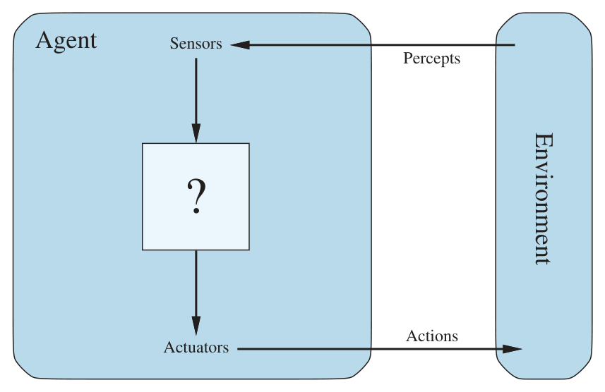
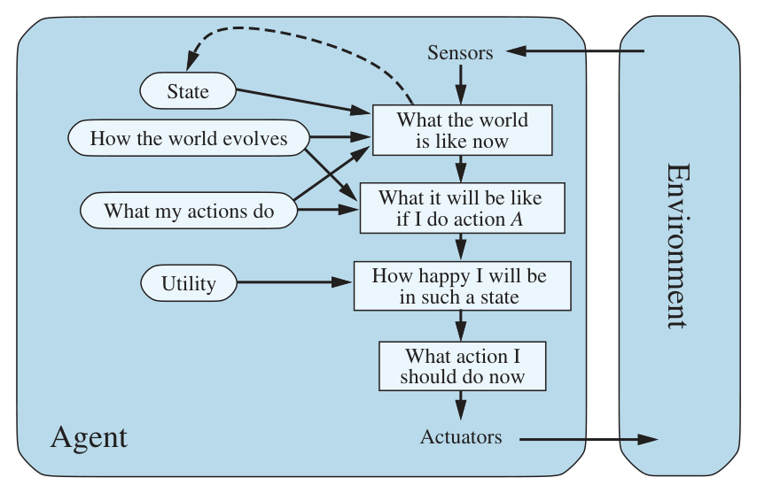
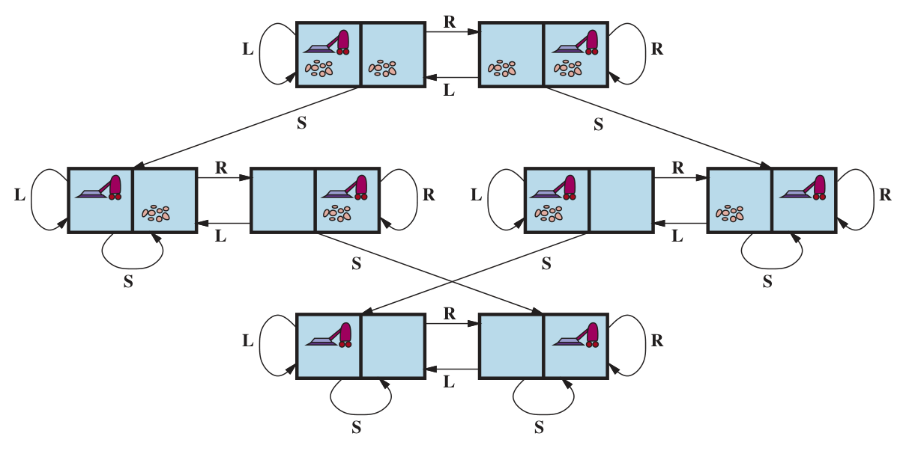

Overview
Artificial intelligence can be viewed as the science of designing rational agents. This topic defines agents and rationality, shows how task environments are specified and classified, describes the basic agent types, and introduces problem formulation for search.
Agents and environments
- Human agent: eyes and ears as sensors; hands, legs and vocal tract as actuators.
- Robotic agent: cameras and infrared range finders as sensors; motors as actuators.
- Software agent: senses file contents, network packets and human input; acts by writing files, sending packets and displaying information.
- Environment: the part of the universe whose state affects what the agent perceives and is affected by its actions.

Percepts, agent function and agent program
- Percept: what the agent's sensors perceive at a given instant.
- Percept sequence: the complete history of everything the agent has ever perceived; an action can depend on built-in knowledge and on the whole percept sequence, but not on anything unperceived.
- Agent = architecture + program, where the architecture is the computing device with physical sensors and actuators.
- The agent function takes the whole percept sequence; the agent program receives only the current percept and must remember earlier percepts itself (Russell and Norvig, 2021, pp. 47–48).
Characteristics of intelligent agents
- Autonomy: behaviour determined by the agent's own percepts and learning rather than by the designer's prior knowledge.
- Reactivity: responds in a timely way to changes in the environment.
- Proactiveness: goal-directed behaviour; takes the initiative.
- Social ability: interacts with other agents, including humans (Wooldridge and Jennings, 1995).
The vacuum-cleaner world
- Two squares, A and B, each clean or dirty.
- Percepts: location and whether that square is dirty, for example [A, Dirty].
- Actions: Right, Left, Suck, and doing nothing.
- A simple agent function: if the current square is dirty, suck; otherwise move to the other square.
- Tabulated over percept sequences, the function is unbounded in size; different ways of filling in the table give different agents, and rationality decides which is better (Russell and Norvig, 2021, pp. 37–38).
Rationality
- Behaviour is judged by its consequences: the sequence of environment states it produces.
- Performance measure: evaluates a sequence of environment states; set by the designer or users, not by the agent.
- Design the measure according to what is wanted in the environment, not how the agent should behave: rewarding dirt cleaned up lets a vacuum agent dump dirt and clean it again; rewarding clean squares per time step does not.
- Such a measure can also penalise electricity consumed and noise generated (Russell and Norvig, 2021, p. 39).
What rationality depends on
- The performance measure (criterion of success).
- The agent's prior knowledge of the environment.
- The actions the agent can perform.
- The agent's percept sequence to date (Russell and Norvig, 2021, p. 40).
- Rational is not omniscient: percepts may not reveal everything relevant.
- Rational is not clairvoyant: outcomes may differ from those expected.
- Hence rational is not successful: rationality maximises expected performance, perfection maximises actual performance.
- Rationality requires information gathering (acting to improve future percepts), learning from experience and autonomy (compensating for partial or incorrect prior knowledge) (Russell and Norvig, 2021, pp. 40–42).
Specifying the task environment
| Agent | Performance measure | Environment | Actuators | Sensors |
|---|---|---|---|---|
| Automated taxi | Safe, fast, legal, comfortable trip; maximise profits | Roads, other traffic, police, pedestrians, customers, weather | Steering, accelerator, brake, signal, horn, display, speech | Cameras, radar, speedometer, GPS, engine sensors, accelerometer, microphones |
| Internet shopping agent | Price, quality, appropriateness, efficiency | Web sites, vendors, shippers | Display to user, follow link, fill in form | Web pages (text, graphics, scripts) |
- Some criteria conflict (speed and safety), so trade-offs are needed (Russell and Norvig, 2021, pp. 42–43).
Properties of task environments
- Fully or partially observable: whether sensors give the complete relevant state at each point in time; with no sensors the environment is unobservable.
- Single-agent or multiagent: multiagent environments may be competitive (chess) or partly cooperative (taxi driving).
- Deterministic or nondeterministic: whether the next state is completely determined by the current state and the action.
- Episodic or sequential: independent atomic episodes of one percept and one action, or current decisions affecting all future ones.
- Static or dynamic: whether the environment can change while the agent deliberates; semidynamic if only the performance score changes with time (chess with a clock).
- Discrete or continuous: distinct, separate values or values sweeping smoothly through a range, for states, time, percepts and actions.
- Known or unknown: whether the outcomes, or outcome probabilities, of all actions are given; a property of the agent's knowledge, not the same as observability (Russell and Norvig, 2021, pp. 43–46).
| Task environment | Observable | Agents | Deterministic | Episodic | Static | Discrete |
|---|---|---|---|---|---|---|
| Crossword puzzle | Fully | Single | Deterministic | Sequential | Static | Discrete |
| Chess with a clock | Fully | Multi | Deterministic | Sequential | Semi | Discrete |
| Poker | Partially | Multi | Stochastic | Sequential | Static | Discrete |
| Taxi driving | Partially | Multi | Stochastic | Sequential | Dynamic | Continuous |
| Medical diagnosis | Partially | Single | Stochastic | Sequential | Dynamic | Continuous |
| Image analysis | Fully | Single | Deterministic | Episodic | Semi | Continuous |
| Part-picking robot | Partially | Single | Stochastic | Episodic | Dynamic | Continuous |
- The hardest case is partially observable, multiagent, nondeterministic, sequential, dynamic, continuous and unknown (Russell and Norvig, 2021, pp. 46–47).
Agent types
- The job of AI is to design the agent program; each program takes the current percept and returns an action.
- Table-driven agent: looks up the whole percept sequence in a table; impractical, as the table is astronomically large (at least 10150 entries for chess) (Russell and Norvig, 2021, p. 48).
Simple reflex agents
- Act on the current percept only, through condition–action rules (“if the car in front is braking, then initiate braking”).
- Work only if the environment is fully observable; otherwise they can loop forever (Russell and Norvig, 2021, pp. 49–51).
Model-based reflex agents
- Keep an internal state tracking the unseen part of the world.
- Update it with a transition model (how the world changes, including the effects of actions) and a sensor model (how the state shows in percepts); then apply condition–action rules (Russell and Norvig, 2021, pp. 51–52).
Goal-based agents
- Combine the model with goal information and choose actions that will eventually achieve the goal, using search or planning.
- More flexible than reflex agents: changing the destination needs only a new goal (Russell and Norvig, 2021, pp. 53–54).
Utility-based agents
- Compare states with a utility function, an internalisation of the performance measure, and choose the action that maximises expected utility.
- Needed when goals conflict (speed and safety) or when several goals cannot be achieved with certainty (Russell and Norvig, 2021, pp. 54–55).

Learning agents
- Any of the above types can be built as a learning agent, with four components:
- Performance element: selects external actions.
- Learning element: makes improvements using feedback.
- Critic: judges performance against a fixed performance standard.
- Problem generator: suggests exploratory actions that lead to new, informative experiences (Russell and Norvig, 2021, pp. 56–57).
Problem formulation
- Uses atomic states, with no internal structure visible to the algorithm.
- Four phases (Arad to Bucharest): goal formulation, problem formulation, search, execution (Russell and Norvig, 2021, pp. 63–64).
Components of a search problem
- State space: the set of possible states.
- Initial state: where the agent starts, for example Arad.
- Goal states: one or more; checked by the goal test.
- Actions: those applicable in each state.
- Transition model: the state resulting from doing action a in state s.
- Action cost function: c(s, a, s′), the cost of action a taking state s to state s′.
Problem types
- Single-state (fully observable, deterministic, known): the solution is a fixed sequence; percepts can be ignored during execution (open loop).
- Sensorless or conformant (unobservable): the solution is still a sequence, for example [Right, Suck, Left, Suck] for the vacuum world (Russell and Norvig, 2021, pp. 126–127).
- Contingency (nondeterministic or partially observable): the solution is a conditional plan that depends on percepts (closed loop) (Russell and Norvig, 2021, p. 64).
- Exploration (unknown state space): the agent must discover states and actions by online search (Russell and Norvig, 2021, p. 141).
State-space examples
- Abstraction removes irrelevant detail; it is valid if every abstract solution can be expanded into a real one, and useful if abstract actions are easier than the original problem (Russell and Norvig, 2021, p. 66).
Vacuum world
- States: agent location and dirt in each square; 2 × 2 × 2 = 8 states (n × 2n for n squares).
- Actions: Left, Right, Suck; goal: all squares clean; cost: 1 per action.

8-puzzle
- States: location of each tile in a 3 × 3 grid with one blank.
- Actions: move the blank Left, Right, Up or Down; goal: a given state; cost: 1 per move.
- Only half of all states can reach a given goal (Russell and Norvig, 2021, p. 68).
Robotic assembly
- States: real-valued joint angles and part coordinates; actions: continuous joint motions.
- Goal: object fully assembled; cost: time to execute (Russell and Norvig, 2021, p. 70).
Multiagent systems and ethics
Multiagent systems
- A multiagent system contains several interacting agents, each with its own goals (Russell and Norvig, 2021, p. 599).
- Communication often emerges as rational behaviour; in competitive settings, randomised behaviour can be rational because it avoids predictability (Russell and Norvig, 2021, p. 45).
- Applications: traffic management, smart energy grids, collaborative robots, games with many AI-controlled characters.
- Challenges: coordination between agents with conflicting goals, decisions in dynamic and uncertain environments, learning from other agents.
Ethical and societal implications
- Bias and fairness: agents trained on historical data can reproduce existing biases (Russell and Norvig, 2021, p. 992).
- Transparency: people affected by an agent's decisions may need to understand them (Russell and Norvig, 2021, p. 997).
- Privacy and security: agents handle personal data and can be attacked or misused (Russell and Norvig, 2021, p. 990).
- Accountability: it must be clear who is responsible when an autonomous agent causes harm (Russell and Norvig, 2021, p. 987).
- A rational agent maximises the performance measure it is given, so a wrongly specified measure produces unwanted behaviour (the King Midas problem) (Russell and Norvig, 2021, p. 33).
References
- Russell, S. and Norvig, P. (2021) Artificial intelligence: a modern approach. 4th edn. Hoboken, NJ: Pearson.
- Wooldridge, M. and Jennings, N.R. (1995) 'Intelligent agents: theory and practice', The Knowledge Engineering Review, 10(2), pp. 115–152. doi:10.1017/S0269888900008122.
Quiz
Only your first attempt at each question counts towards your score. Interactive questions may be retried. Progress is saved in this browser.
What does the agent function map?
Which statement best describes a rational agent?
Which is the most suitable performance measure for a rational vacuum-cleaning agent?
Which of the following is not one of the four things on which rationality at a given time depends?
In a PEAS description of an automated taxi, which of these is an actuator?
Chess played with a clock is classified as which of the following?
An agent inspects parts on an assembly line and classifies each one as defective or not, independently of earlier parts. This task environment is:
Which combination of properties describes taxi driving?
Why does a simple reflex agent generally fail in a partially observable environment?
What two kinds of knowledge does a model-based reflex agent use to update its internal state?
In a learning agent, which component suggests exploratory actions that may be suboptimal in the short run but lead to informative experiences?
In the formulation of a search problem, what does the transition model specify?
Explain why a rational agent need not be successful, and name two activities that rationality nevertheless requires.
Rationality maximises expected performance given the percept sequence and built-in knowledge. The agent is neither omniscient nor clairvoyant, so a rational action can still turn out badly. Rationality nevertheless requires information gathering, learning and autonomy.
Compare goal-based and utility-based agents. Give two situations in which goals alone are inadequate.
A goal-based agent chooses actions that eventually achieve a goal, a binary distinction between states. A utility-based agent compares states with a utility function and maximises expected utility. Goals are inadequate (1) when goals conflict, such as speed and safety, and (2) when several goals cannot be achieved with certainty.
Formulate the two-square vacuum world as a search problem, stating the states, initial state, actions, transition model, goal states and action cost. How many states are there?
States: agent location and dirt in each square. Initial state: any state. Actions: Left, Right, Suck. Transition model: Suck removes dirt; Left and Right move the agent, with no effect at the edge. Goal: all squares clean. Cost: 1 per action. There are 2 × 2 × 2 = 8 states.